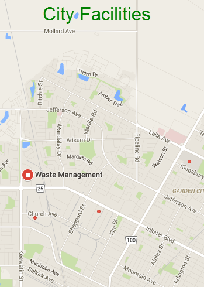

Recycle
What goes in a recycling box?
Put the following items in a recycling box:
- Glass
- Paper
- Plastic
- Aluminum foil (clean)
- Cardboard (fold or break into small pieces)
- Styrofoam
- Books (new in 2021/2022)
Community Recycling Centers
Community Recycling Centers will accept good used clothing, furniture and household items for their on-site stores. Instead of calling for a bulk pickup, take used items to the Community Recycling Centers!
-
North Community Recycling Center
- Monday: 10 am - 1 pm
- Wednesday: 10 am - 5 pm
- First Saturday of each month only: 9 am - 12 pm
-
South Community Recycling Center
- Tuesday: 10 am - 2 pm
- Saturday: 10 am - 12 pm
